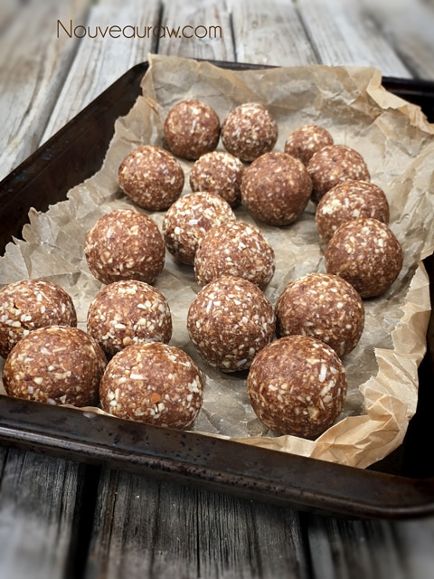
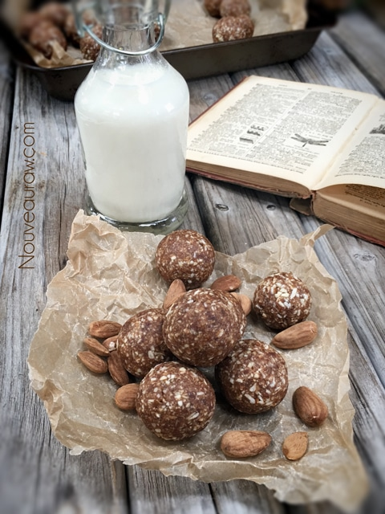
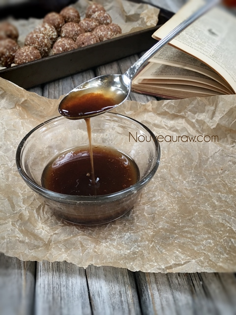
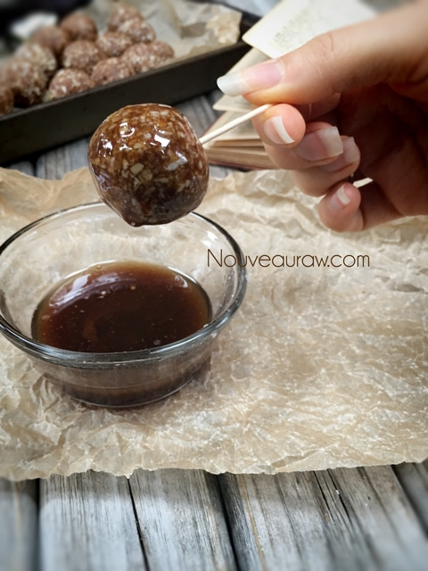
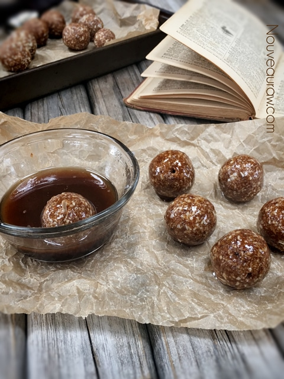

Chewy Cinnamon Donut Holes

~ raw, vegan, gluten-free ~
This was a recipe request from NouveauRaw member Veronica. It was evident that this treat wasn’t completely about the flavor but also about texture. Her exact words were, “It was sweet, crunchy and moist and you could taste the cinnamon, but it wasn’t overpowering. Yummy! :)”
In order to get the texture that I hoped to create for her, there were a few things that I really needed to pay attention to when creating this treat.
First, let’s tackle the almonds. I started the recipe with almonds that had already been soaked and dehydrated. This is important, so they have that crisp and crunchy factor. If you are not concerned with this part of the texture, you can just use soaked almonds.
Next, when it comes to processing we only want to break them up into medium-sized crumbles. Leave them larger than you think you will need because they will further breakdown as we add the remaining ingredients. I will tackle this more in the “preparation” section below.
Dates are the key ingredient for the moist texture. I highly recommend Medjool dates that are moist. If they are really dry, you will want to re-hydrate them covered in enough warm water for about 10 minutes. Drain and discard the soak water… then hand-squeeze the excess water from them before adding to the food processor. If you add them when they are really dry, it will require more processing time which will break down the almonds too much.
These balls tasted wonderful all on their own, but I had to take it a step further and add a glaze to them. This is optional but sure does elevate this treat to a whole new level. Play around and have fun with your food. :) I hope you enjoy this recipe. Blessings, amie sue
yields 20 (1 Tbsp each) holes
Donut holes:
- 1 cup raw almonds, soaked & dehydrated
- 1/2 cup shredded dried coconut
- 1 Tbsp ground Ceylon cinnamon
- 1/4 tsp ground cardamom
- 1/4 tsp Himalayan pink salt
- 1 cup Medjool dates
- 1 tsp vanilla extract
Glaze:
- 2 Tbsp coconut oil, melted
- 2 Tbsp maple syrup
- 1/4 tsp ground Ceylon cinnamon
Preparation:
Donut holes:
- In the food processor, fitted with the “S” blade, pulse together the almonds, coconut, cinnamon, cardamom, and salt. Remember to leave larger bits than normal if you want the end result to be crunchy and moist.
- Add the dates and vanilla, processing until the dates are mixed in. The batter will almost look dry. Try pinching it together to see if it will stick together. Do this often so you don’t over-process the batter.
- Once sticky, roll 1 Tbsp worth of batter in the palm of your hands, shaping into a ball. Place on a rimmed cookie sheet and slide into the freezer to chill.
Glaze:
- Soften the coconut oil to the melting point, add the maple syrup and cinnamon.
- Keep stirring it together until it starts to thicken.
- This will keep the three ingredients infused together. Otherwise, the oil will float, and the cinnamon will sink, creating an uneven glaze for coating with.
- Remove the doughnut holes from the freezer, poke them with a toothpick and dip into the glaze, coating them completely. Place back on the cookie sheet.
- Repeat until all balls are covered.
- By the time you are done with the last one, start back over from the first ball and give them a second coating.
- Place back in the freezer to let the glaze totally set up.
- Store in airtight containers in the fridge or freezer. They can keep on the counter with an ambient temp of roughly 70 degrees. Much warmer and the coconut oil will start to soften.





© AmieSue.com